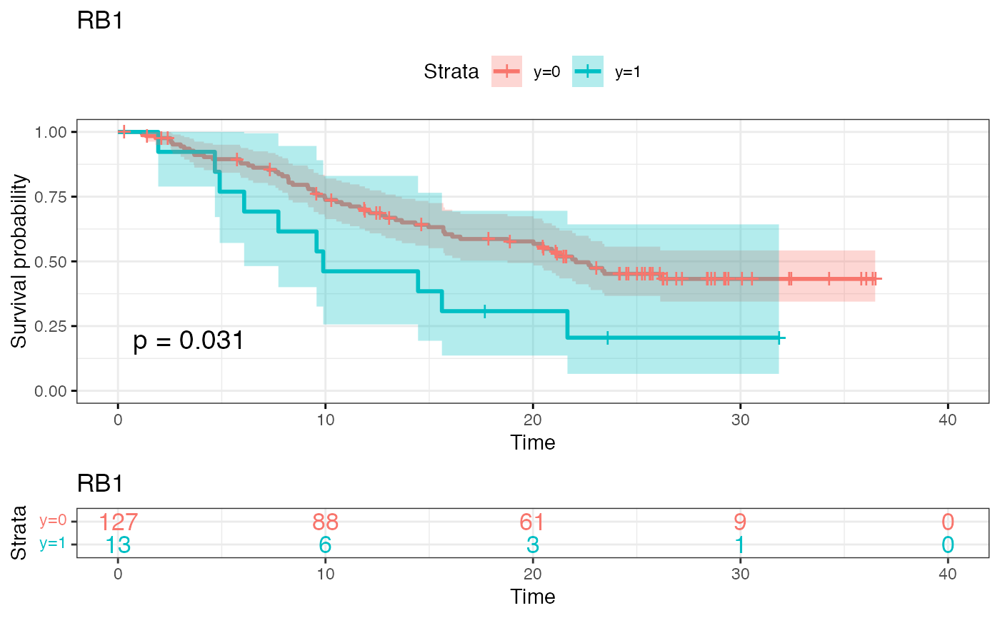
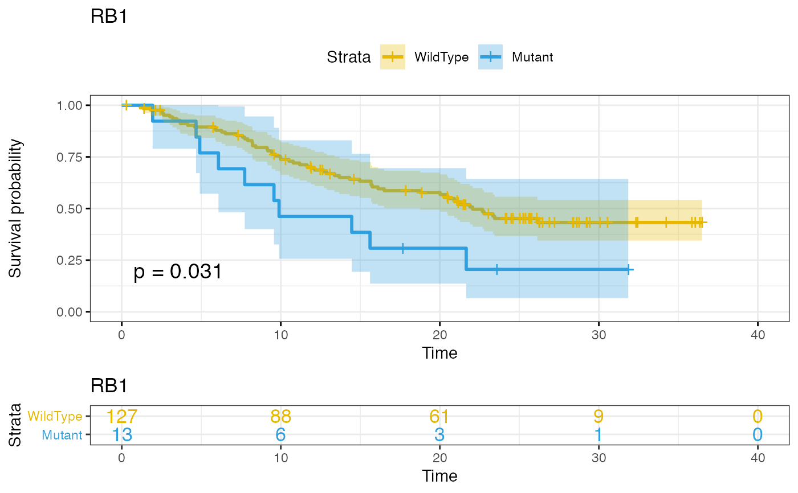
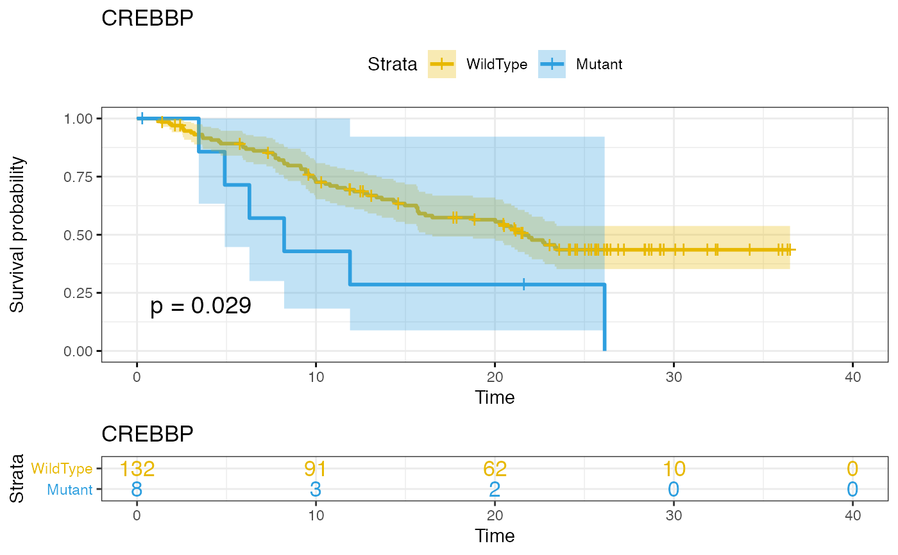
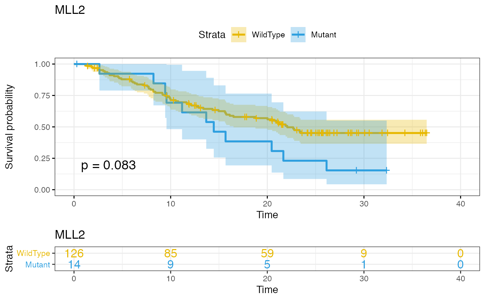
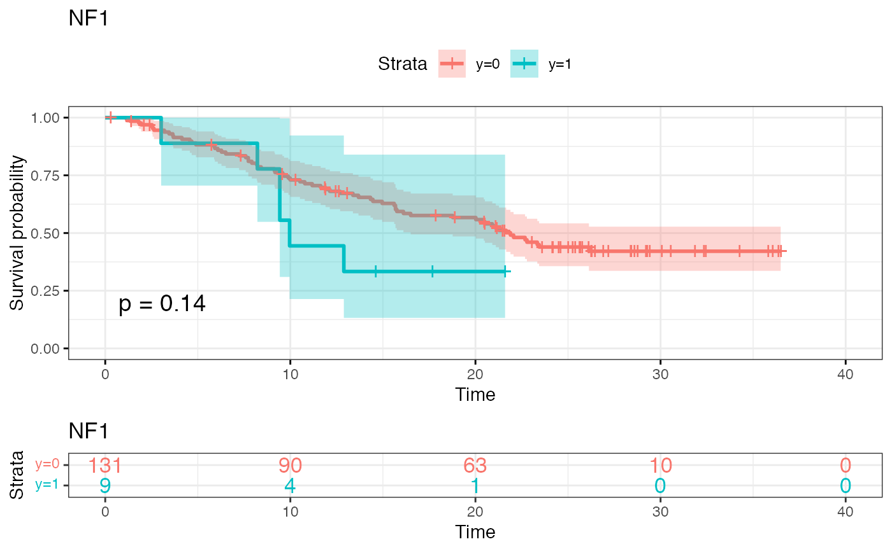
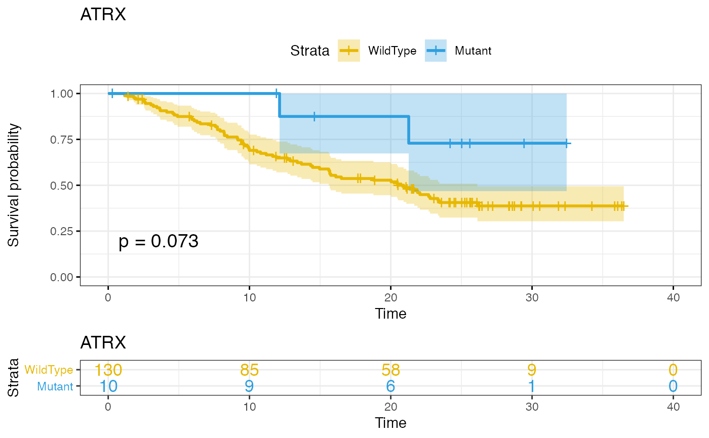
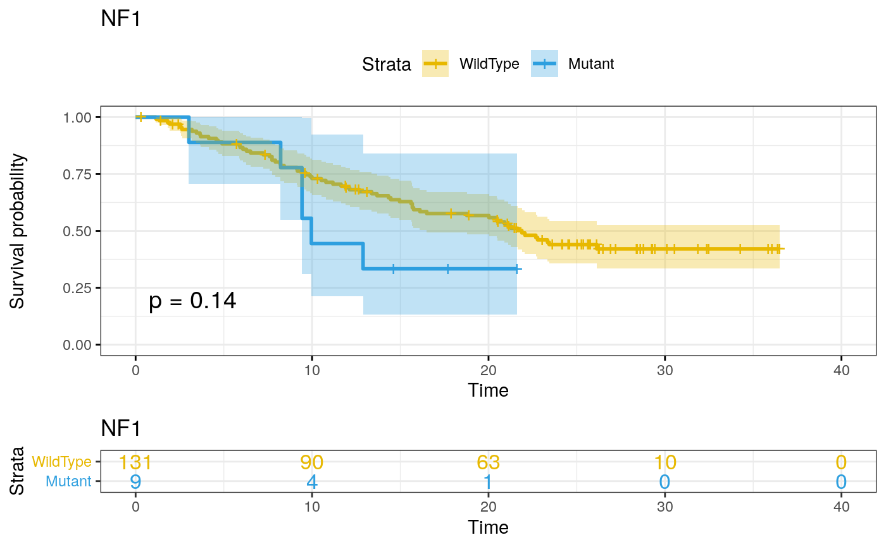
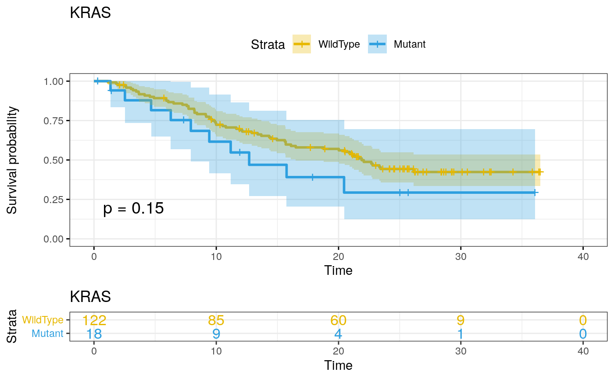
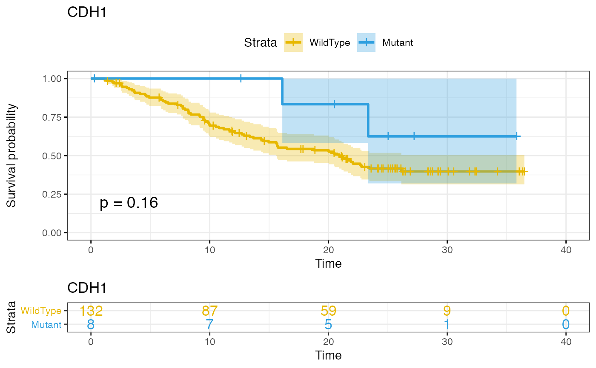

uni.cox Performs univariate cox proportional hazard model on every feature
Source:R/uni-cox.R
uni.cox.Rduni.cox Performs univariate cox proportional hazard model on every feature
uni.cox(X, surv.dat, surv.formula, filter = 0, genes = NULL)
Arguments
| X | Matrix/surv.datframe of genomic features, continuous or binary (note cannot handle categorical surv.dat for the moment). |
|---|---|
| surv.dat | a surv.dat frame containing the survival information. This can be made of 2 or 3 columns. 1 or 2 for time, and one for status (where 1 is event and 0 is no event). |
| surv.formula | a survival formula with names matching those in surv.dat eg: Surv(time,status)~. |
| filter | a numeric value between 0 and 1 (1 not included) that is the lower bound for the proportion of patients having a genetic event (only for binary features). All features with an event rate lower than that value will be removed. Default is 0 (all features included). |
| genes | a character vector of gene names that will be the only ones to be kept. Default is NULL, all genes are used. |
Value
tab A table of all the fits performed sorted by adjusted pvalues.
p An interactive plot of log(pvalue) by hazard ration.
KM List of survival plots of the top 10 most significant genes
Examples
library(gnomeR) library(dplyr) library(dtplyr) patients <- as.character(unique(mut$Tumor_Sample_Barcode))[1:200] gen.dat <- binmat(patients = patients,maf = mut)#> Warning: To ensure gene with multiple names/aliases are correctly grouped together, the #> following genes in your maf dataframe have been recoded: #> AMER1 recoded to FAM123B #> To ensure gene with multiple names/aliases are correctly grouped together, the #> following genes in your maf dataframe have been recoded: #> TCEB1 recoded to ELOC#> Warning: All samples were sequenced on the same platform. #> The specify.plat argument has been overwritten to FALSE.surv.dat <- clin.patients %>% filter(X.Patient.Identifier %in% abbreviate(patients,strict = TRUE, minlength = 9)) %>% select(X.Patient.Identifier,Overall.Survival..Months., Overall.Survival.Status) %>% rename(DMPID = X.Patient.Identifier, time = Overall.Survival..Months., status = Overall.Survival.Status) %>% mutate(time = as.numeric(as.character(time)), status = ifelse(status == "LIVING",0,1)) %>% filter(!is.na(time)) X <- gen.dat[match(surv.dat$DMPID, abbreviate(rownames(gen.dat),strict = TRUE, minlength = 9)),] uni.cox(X = X, surv.dat = surv.dat, surv.formula = Surv(time,status)~.,filter = 0.05)#> Warning: Loglik converged before variable 1 ; coefficient may be infinite.#> Warning: Vectorized input to `element_text()` is not officially supported. #> Results may be unexpected or may change in future versions of ggplot2.#> Warning: Vectorized input to `element_text()` is not officially supported. #> Results may be unexpected or may change in future versions of ggplot2.#> Warning: Vectorized input to `element_text()` is not officially supported. #> Results may be unexpected or may change in future versions of ggplot2.#> Warning: Vectorized input to `element_text()` is not officially supported. #> Results may be unexpected or may change in future versions of ggplot2.#> Warning: Vectorized input to `element_text()` is not officially supported. #> Results may be unexpected or may change in future versions of ggplot2.#> Warning: Vectorized input to `element_text()` is not officially supported. #> Results may be unexpected or may change in future versions of ggplot2.#> Warning: Vectorized input to `element_text()` is not officially supported. #> Results may be unexpected or may change in future versions of ggplot2.#> Warning: Vectorized input to `element_text()` is not officially supported. #> Results may be unexpected or may change in future versions of ggplot2.#> Warning: Vectorized input to `element_text()` is not officially supported. #> Results may be unexpected or may change in future versions of ggplot2.#> Warning: Vectorized input to `element_text()` is not officially supported. #> Results may be unexpected or may change in future versions of ggplot2.#> $tab #> Feature Coefficient HR Pvalue FDR MutationFrequency #> 1 EGFR 0.84 2.32 0.00821 0.214 0.10 #> 2 MLL 0.94 2.57 0.01960 0.227 0.06 #> 3 RB1 0.72 2.06 0.03480 0.227 0.09 #> 4 CREBBP 0.90 2.46 0.03490 0.227 0.06 #> 5 MLL2 0.56 1.76 0.08590 0.341 0.10 #> 6 TP53 0.40 1.49 0.08780 0.341 0.44 #> 7 ATRX -1.21 0.30 0.09180 0.341 0.07 #> 8 NF1 0.62 1.87 0.14800 0.455 0.06 #> 9 KRAS 0.48 1.62 0.15800 0.455 0.13 #> 10 CDH1 -0.97 0.38 0.17500 0.456 0.06 #> 11 APC -0.65 0.52 0.27000 0.617 0.07 #> 12 KEAP1 0.42 1.52 0.29100 0.617 0.08 #> 13 PTEN -0.60 0.55 0.30900 0.617 0.06 #> 14 TERT 0.30 1.35 0.34800 0.646 0.14 #> 15 EPHA5 -0.27 0.77 0.60300 0.996 0.06 #> 16 PIK3CA 0.16 1.17 0.67100 0.996 0.11 #> 17 NOTCH1 -0.21 0.81 0.67900 0.996 0.07 #> 18 SMARCA4 -0.18 0.83 0.72100 0.996 0.06 #> 19 ARID1A 0.12 1.12 0.78600 0.996 0.08 #> 20 POLE -0.12 0.89 0.84100 0.996 0.05 #> 21 FAT1 -0.07 0.94 0.86700 0.996 0.11 #> 22 MLL3 -0.06 0.94 0.89400 0.996 0.06 #> 23 STK11 0.02 1.02 0.96300 0.996 0.09 #> 24 PTPRT -0.01 0.99 0.97800 0.996 0.05 #> 25 ATM 0.01 1.01 0.97800 0.996 0.07 #> 26 BRCA2 -18.16 0.00 0.99600 0.996 0.05 #> #> $p#> #> #>#> Warning: minimal value for n is 3, returning requested palette with 3 different levels#> Warning: minimal value for n is 3, returning requested palette with 3 different levels#> #> $KM #> $KM[[1]]#> #> $KM[[2]]#> #> $KM[[3]]#> #> $KM[[4]]#> #> $KM[[5]]#> #> $KM[[6]]#> #> $KM[[7]]#> #> $KM[[8]]#> #> $KM[[9]]#> #> $KM[[10]]#> #>